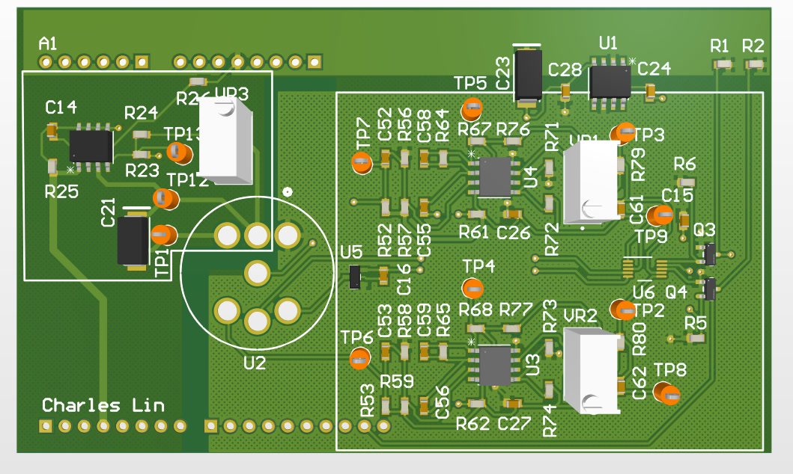

Overview
Designed and built a low-cost dual-gas sensing platform for peatland greenhouse gas research, developing a custom NDIR methane sensor PCB and calibration workflow and integrating it with an existing CO₂ platform to enable time-stamped CH₄ and CO₂ monitoring.
For my final-year individual project, I designed and built a low-cost methane sensing platform based on the SGX IR12GJ NDIR sensor, aimed at making distributed greenhouse gas monitoring of peatland restoration sites more affordable. The work spanned custom PCB design with 4 Hz lamp drive and band-pass signal conditioning, embedded firmware, and two-stage calibration against a commercial gas analyser, before integrating the sensor with an existing CO₂ platform to form a complete time-stamped dual-gas monitoring system.
View on GitHub